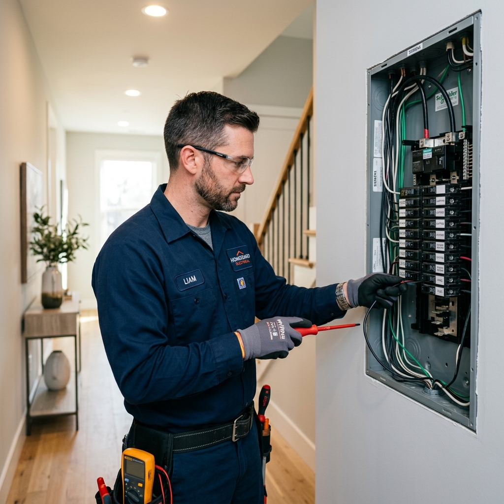
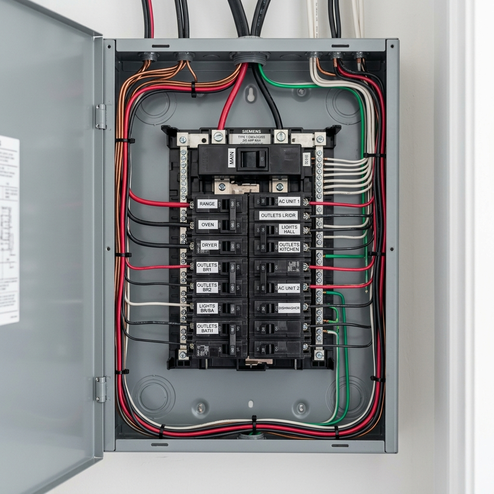
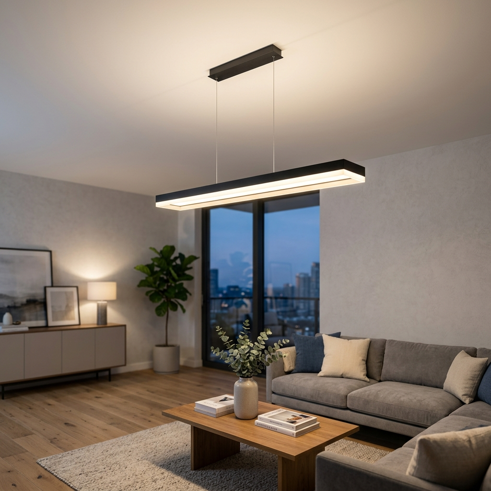

Hibaelhárítás és Javítás
Nincs áram? Serceg a konnektor? Levágja a biztosítékot? Az elektromos hibák nem csak bosszantóak, de veszélyesek is lehetnek. Gyors és szakszerű hibaelhárítást vállalok Budapesten.
- Zárlatkeresés és javítás
- Füstölő, melegedő kötések cseréje
- Hibás konnektorok és kapcsolók cseréje
- Áramvédő kapcsoló (FI relé) problémák kivizsgálása

Biztosítéktábla Csere
A régi, olvadóbiztosítékos vagy elavult kismegszakítós táblák cseréje modern, biztonságos elosztó táblákra. Ez az egyik legfontosabb lépés otthona elektromos biztonságának növelése érdekében.
- FI relé (áram-védőkapcsoló) beépítése (Életvédelmi funkció)
- Modern kismegszakítók felszerelése
- Túlfeszültség elleni védelem (opcionális)
- Áttekinthető, feliratozott áramkörök

Új és meglévő lakás villanyszerelése
Komplett elektromos hálózat kiépítése felújítás vagy új építés esetén. A tervezéstől a kivitelezésig teljes körű megoldást nyújtok, az Ön igényeire szabva.
- Teljes újravezetékelés (rézvezetékekre történő csere)
- Okosotthon előkészítés, rendszerek telepítése
- Konyhai nagygépek (sütő, főzőlap) szakszerű bekötése
- Gipszkarton falakba és álmennyezetekbe történő szerelés

Lámpaszerelés és Karbantartás
Új világítástechnikai megoldások telepítése, dizájn lámpák szakszerű felszerelése és időszakos karbantartási munkálatok magánszemélyek és cégek részére.
- Csillárok, falikarok, mennyezeti lámpák felszerelése
- LED szalagok, rejtett világítások kiépítése
- Kültéri és kerti világítás szerelése
- Elektromos hálózat időszakos átvizsgálása
